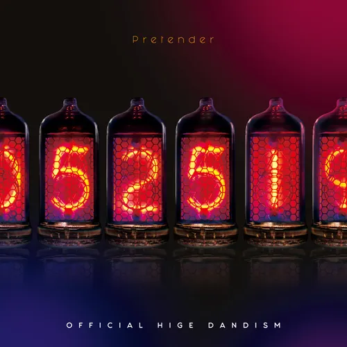
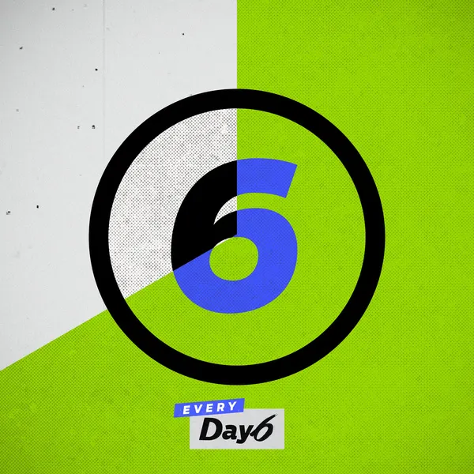

노래 소개
제가 좋아하는 노래 몇가지를 소개하도록 하겠습니다...
| album | title | singer | lyrics | comment |
|---|---|---|---|---|
| Heroine | back number |
네가 있는 거리에 하얀 눈이 내렸을 때 너는 누굴 보고 싶어할까 눈이 예쁘다고 누구에게 말하고 싶어질까 나는, 역시 나는 아아, 지금 내 옆에 눈이 예쁘다며 웃는 건 너였으면 좋겠어 그래도 춥네~ 라며 기뻐 보이는 것도 넘어질 뻔해서 붙잡은 손 끝에서 고마워~ 라며 즐거워 보이는 것도 그것도 너였으면 좋겠어 |
성시경씨가 일본 예능에서 부른 게 쇼츠에 떠서 알게 된 노래인데, 듣다보니 좋아하게 되어버렸어요. 전하지 못 한 짝사랑 노래라고 생각합니다. 영화나 드라마에서 히로인 역할을 보며 짝사랑 상대를 대입하는 가사가 마음에 와닿아요. 사랑이란 거창한 게 아니라 일상에서, 혹은 픽션을 즐길 때 마음 한 구석에서 항상 떠오르는 사람이 있다는 것... 아름답다... |
|
 |
Pretender | Official髭男dism |
굿바이 그러면 나에게 있어 너는 뭐야? 답은 모르겠어, 알고 싶지도 않아 그저 한 가지 확실한 것이 있다고 한다면 "너는 아름다워" |
뭔가 노래를 어디선가 듣게 돼서 좋네~ 라고 생각하고 있었는데 제가 좋아하던 게임에 영감을 받아 만들어진 노래라고 하더라구요. 알고 들으니까 더 이해가 되고 감동이 되는...흑 이것도 짝사랑? 노래인데 여러 감정과 생각이 들어서 혼란스러운 와중에도 하나 확실한 건 '네가 예쁘다는 것'이라는 점이 마음에 들었습니다. 단 하나의 사실은 내가 너를 좋아한다는 것. 아름답다... |
 |
좋은 걸 뭐 어떡해 | Day6 |
좋은 걸 뭐 어떡해 한심해도 어쩌겠냐 난 그냥 너랑 같이 있는 게 좋아 나도 참 답이 없다 야 |
이것도 짝사랑 노래네? 저.. 짝사랑 노래를 좋아하나봐요...(맞음) 이거는 어장?당하는 호구 짝사랑 노래입니다. 지가 호구인 걸 알면서도 좋아하는데 뭐 어쩌겠냐는 노래예요. 쫌 찌질st 감성도 좋고, 저도 좋은 게 좋은 사람이라 공감되기도 해서 좋아합니다. 내 감정 내 소유... 바보 같지만... 우뜩해! |